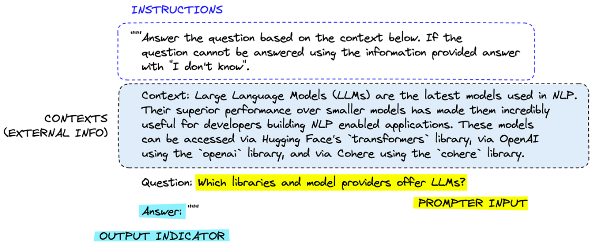

Prompt 模板设计
在实际 AI 系统开发中，Prompt 很少以“临时文本”的形式存在，而通常会被设计为 可复用、可维 护、可扩展的 Prompt 模板（Prompt Template）。这种做法的原因在于，大语言模型往往需要在系 统中被反复调用，如果每一次调用都手动编写 Prompt，不仅效率低下，还会导致系统难以维护。 因此，在工程实践中，开发者通常会将 Prompt 抽象为一种 结构化模板，并通过参数替换的方式动态 生成最终的 Prompt 内容。这样不仅可以保证 Prompt 的稳定性，还能够让系统更加灵活地适应不同 任务和输入数据。
Prompt 模板设计本质上是一种 将 Prompt 工程化、模块化的技术方法。通过合理的模板设计，可以 显著提升模型输出的一致性，并降低系统开发和维护成本。
Prompt Template 设计原则
设计高质量 Prompt 模板时，需要遵循一些基本原则，以确保模型能够稳定理解任务并生成符合预期 的结果。

首先是 任务描述清晰。Prompt 中必须明确说明模型需要完成的任务目标，避免使用模糊或含义不明 确的指令。例如，“分析这段文本”这样的描述过于宽泛，而“总结文本的主要观点并输出三条关键 结论”则更加具体。 其次是 结构稳定。在同一系统中，Prompt 的整体结构应该保持一致，例如统一的角色定义、任务说 明和输出格式。这种结构化设计可以帮助模型形成稳定的生成模式，从而减少输出波动。 第三是 上下文信息充分但不过量。模型需要足够的信息来理解任务，但过多的上下文会增加 Token 成 本，并可能干扰模型的判断。因此，在模板设计中需要平衡信息量与效率。 另外一个重要原则是 明确输出格式。在工程系统中，模型输出通常需要被程序解析，例如 JSON 数据 或固定字段。如果 Prompt 没有明确输出格式，模型可能会生成难以解析的自然语言文本，从而影响
系统稳定性。
最后是 避免歧义与冲突指令。如果 Prompt 中包含相互矛盾的要求，例如既要求“详细解释”，又要 求“回答不超过一句话”，模型可能会产生不一致的输出。因此，在模板设计中需要尽量保持指令逻 辑清晰。
Prompt 参数化
为了让 Prompt 模板能够适用于不同任务输入，开发者通常会采用 参数化（Parameterization） 的 方式来构建 Prompt。所谓参数化，就是在 Prompt 中预留变量位置，在实际调用时再填入具体内容。 例如，一个简单的 Prompt 模板可以设计为：
1 你是一名专业客服。 2 3 用户问题： 4 {user_question} 5 6 请根据以下知识库内容回答用户问题： 7 8 {knowledge_context} 9 10 请使用简洁语言回答，并以 JSON 格式输出： 11 { 12 "answer": "" 13 }
在系统运行时， {user_question} 和 {knowledge_context} 会被替换为真实数据，从而生 成最终 Prompt。
通过这种方式，一个 Prompt 模板可以被重复使用，并适用于不同用户输入和不同知识内容。这种设 计在 RAG 系统、AI Agent、智能客服以及数据分析系统 中非常常见。
在复杂系统中，Prompt 参数不仅可以包含用户输入，还可以包含多种动态信息，例如：
-
检索系统返回的知识片段
-
工具调用结果
-
对话历史记录
-
任务状态信息
通过组合这些参数，可以让 Prompt 动态适应不同的任务场景，从而提升系统整体智能水平。 总体来看，Prompt 模板设计的核心目标是 将 Prompt 从一次性的文本输入，转变为可复用的系统组 件。通过合理的模板结构和参数化设计，可以让大语言模型更稳定地融入软件系统，并成为可控的工 程模块。